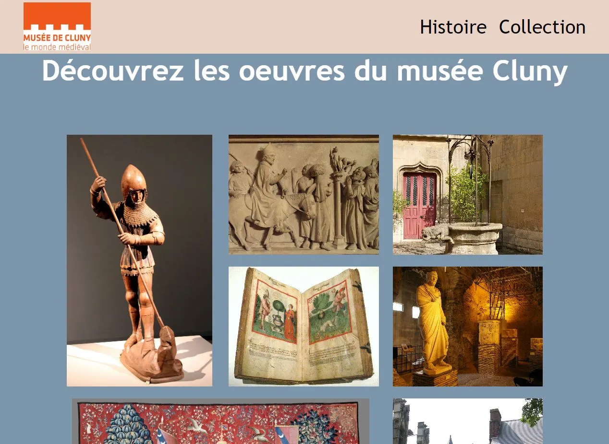

Un projet de javascript portant notamment sur la vérification de formulaires avec l'usage d'expressions régulières. Le javascript a aussi été utilisé pour animer et afficher du contenu. J'ai aussi pu utiliser des libraires.
Ambroise Piétu
Salut c'est moi.
Projets

Ce projet présente rapidement le musée Cluny à Paris. Il s'agit d'une partie d'un projet open source qui présente des lieux de la région parisienne. En termes de technique, ce site m'a permis d'appréhender le scss et de mieux utiliser github.
Il s'agit de la création d'un thème sur wordpress. J'ai pu par exemple modifier l'interface d'administration de wordpress pour ne citer que cette découverte.